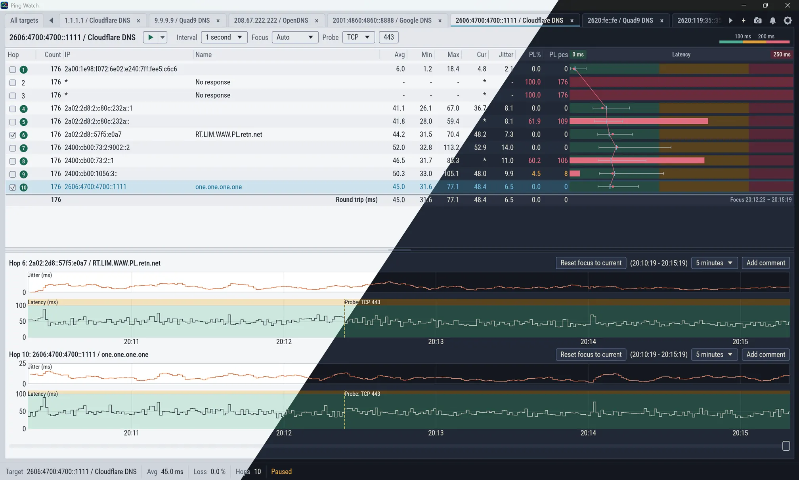

What it does
Enter an address, and Ping Watch probes every router on the way to it, again and again, so a slow or dropping hop stands out at once. It keeps the history, so you can look back at what happened while you were away.
Hop by hop
Every router on the route with its latency, jitter and loss in percent and in lost probes, and a bar over green, amber and red zones whose limits you set. Show or hide columns; long routes fold.
ICMP or TCP
Pings, or TCP connection requests to a port for servers that ignore pings and firewalls that drop them, over IPv4 and IPv6. TCP needs no packet driver, only administrator rights and a few firewall rules, which Ping Watch adds to Windows Firewall when you agree.
History
Every probe is kept on this PC. Tick hops to chart them one under another, from the last minute to the last seven days, with comments pinned to moments.
Several targets
A tab per target, and "All targets" to compare them side by side and chart the ones you tick.
Alerts
Rules for loss and latency; Windows shows a notification when one fires and when the connection is fine again.
Snapshots
One click saves the route, the chart and the alerts as an HTML page to send to your provider or print.
Five languages
English, Russian, German, French and Spanish. Light and dark themes, or the one Windows uses.
Private
No accounts, telemetry, ads or analytics. It sends the pings (or TCP probes) and DNS lookups tracing needs (the reverse ones can be turned off), and asks GitHub for a new version once a day (can be turned off too).
Installation
- Download
PingWatch-<version>-setup.exeor the portable zip from the latest release. - Run the installer (no administrator rights needed) and choose a normal or a portable installation, or
unpack the zip anywhere and run
PingWatch.exe. - The app is not code-signed yet, so Windows SmartScreen may warn about it: click More info → Run anyway.
Details on the files the app keeps and everything it sends are in the README.